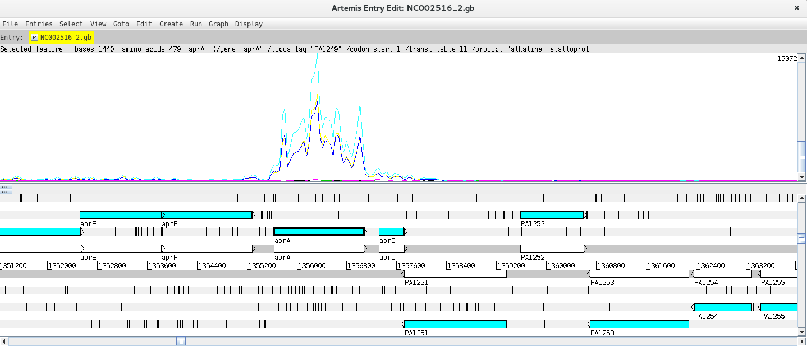

Click here to download the full course documentation conatining this tutorial.
Pseudomonas aeruginosa is a Gram-negative opportunistic pathogen that is commonly present in diverse environments such as water, soil or plants [1]. This pathogen is one of the most frequent agents of healthcare-associated infections and frequently associated with multidrug resistance [2, 3]. Moreover, this species has intrinsic resistance to several antibiotics and also displays numerous virulence factors [4]. Previous data obtained by Tortuel et al (2022) showed that infection of P. aeruginosa with a Pf4 variant bacteriophage displayed altered expression of genes involved in stress response [5]. This practical covers the partial analysis of the global transcriptomic study developed by the authors using P. aeruginosa in untreated conditions and those treated with the Pf4 variant bacteriophage.
Citation:
Tortuel D, Tahrioui A, David A, Cambronel M et al. Pf4 Phage Variant Infection Reduces Virulence-Associated Traits in Pseudomonas aeruginosa. Microbiol Spectr 2022 Oct 26;10(5):e0154822. PMID: 36036571
The data for this practical is available through the NCBI Gene Expression Omnibus (GEO) database under accession GSE201738. The dataset comprises six samples, subjected to RNA-Seq by paired-end sequencing, representing a Pf4-infected and Pf4-uninfected strains (three biological replicates each, Table 1):
The practical is divided in three exercises, Exercise 1 pertains the mapping and generation of raw transcript count and has been carried out ahead since the computational steps involved are time consuming. Nonetheless, the commands executed are outlined below along with explanatory context. The second exercise will involve the visualization of mapped reads and the third exercise will cover the identification of differentially expressed genes across the conditions tested.
The initial stage of the analytical process of RNA-Seq data for this practical will consist of mapping the reads to a reference genome following a similar approach as the one already covered in the mapping module for this course. As such, this will require an adequate genome reference file. An annotation file covering all genes in this same reference genome will also be needed. We will use the genome of Pseudomonas aeruginosa PAO1 as reference genome, which has already been downloaded in the FASTA format, GenBank format and annotation (GFF3) from NCBI GenBank (accession NC002516). The following files are therefore already present in the course module directory in the Pa subdirectory. Let’s start!
From the home directory type:
$ cd Module6/Pa $ ls
Please note for the following files:
• NC002516_2.fasta – reference genome in the fasta format;
• NC002516_2.gb - reference genome in the GenBank format;
• NC002516_2.gff3 – annotation file in the GFF3 format.
You can look inside these files to confirm its format.
In the same directory you will find compressed FastQ files containing the RNA-Seq raw reads. Each is named according to the Run ID in Table 1 and if this is paired-end sequencing, it will have _1.fastq.gz or _2.fastq.gz appended to the Run ID.
Which one do you have? ____________________________
The mapping steps were done using the following commands:
$ bwa mem NC002516_2.fasta SRR18957713_1.fastq.gz SRR18957713_2.fastq.gz | samtools sort --write-index -o SRR18957713.bam - $ bwa mem NC002516_2.fasta SRR18957714_1.fastq.gz SRR18957714_2.fastq.gz | samtools sort --write-index -o SRR18957714.bam - $ bwa mem NC002516_2.fasta SRR18957715_1.fastq.gz SRR18957715_2.fastq.gz | samtools sort --write-index -o SRR18957715.bam - $ bwa mem NC002516_2.fasta SRR18957716_1.fastq.gz SRR18957716_2.fastq.gz | samtools sort --write-index -o SRR18957716.bam - $ bwa mem NC002516_2.fasta SRR18957717_1.fastq.gz SRR18957717_2.fastq.gz | samtools sort --write-index -o SRR18957717.bam - $ bwa mem NC002516_2.fasta SRR18957717_1.fastq.gz SRR18957717_2.fastq.gz | samtools sort --write-index -o SRR18957717.bam - $ bwa mem NC002516_2.fasta SRR18957718_1.fastq.gz SRR18957718_2.fastq.gz | samtools sort --write-index -o SRR18957718.bam -
Each command allows for mapping of the reads using BWA MEM algorithm and pipes it to samtools in order generate a BAM containing all mapped reads and reference. Next you need to index the BAM file by typing:
$ samtools index SRR18957713.bam $ samtools index SRR18957714.bam $ samtools index SRR18957715.bam $ samtools index SRR18957716.bam $ samtools index SRR18957717.bam $ samtools index SRR18957718.bam
At this point you can already visualize your mapping data but we will leave it to the second part of this practical. For now we need to count the number of reads mapped to each feature/gene. Please note that for this stage you will need to know the position, i.e., start, stop and strand of the genes in your gene. This information is not present in the FASTA reference genome you used to map the reads nor you can extract it directly from the BAM files. This is where the GFF file is needed! You will be using HTSeq to count the reads in the genes, specifically its htseq-count script [7]. By typing:
$ htseq-count #or $ htseq-count --help
You will learn a little bit of the different files needed, arguments to this command and output. You can produce the files containing the raw counts by doing the following:
$ htseq-count -f bam -r pos -s reverse -t gene -i Name SRR18957713.bam NC002516_2.gff3 > SRR18957713_count.txt $ htseq-count -f bam -r pos -s reverse -t gene -i Name SRR18957714.bam NC002516_2.gff3 > SRR18957714_count.txt $ htseq-count -f bam -r pos -s reverse -t gene -i Name SRR18957715.bam NC002516_2.gff3 > SRR18957715_count.txt $ htseq-count -f bam -r pos -s reverse -t gene -i Name SRR18957716.bam NC002516_2.gff3 > SRR18957716_count.txt $ htseq-count -f bam -r pos -s reverse -t gene -i Name SRR18957717.bam NC002516_2.gff3 > SRR18957717_count.txt $ htseq-count -f bam -r pos -s reverse -t gene -i Name SRR18957718.bam NC002516_2.gff3 > SRR18957718_count.txt
Can you check why are we using those extra arguments besides the BAM and the GFF file? Also, please note that the output is being redirected to files named *_count.txt files. Look at their content. Does it resemble something like this:

These files contain the raw read counts for each gene and will be used as input for the Differential Gene Expression analysis in Exercise 3. But before that let us visualize the mapped data so that you can understand better what we have done so far and what these counts represent.
Notice that you already have the files with the raw counts! To download all previously created BAM files and index files for this practical session, please go to:
https://ulisboa-my.sharepoint.com/:f:/g/personal/jperdigao_office365_ulisboa_pt/EkBjH_nIesdIlqBXPIXy3_oB4NG7dg4RAksXHik2lODmbQ?e=fyu1w7and download the bam_files_KP.tar.gz file (use command: tar -xvf bam_files_KP.tar.gz to decompress the file). Run this last command in the Pa sub-directory after downloading the file to this location.
For the next exercise you can visualize the mapped reads in Artemis. Inside the directory containing the data, type:
$ art
This will start Artemis. You must first load your reference genome, which can be done in multiple ways:
i) you can open the NC002516_2.gb file, containing the genome and features in the GenBank file, or;
ii) you can open the NC002516_2.fasta file and then read in the GFF file so that you can see the different feature tracks.
Next, you need to read in your BAM files. You can start by going to File >> Read BAM/VCF and select the first BAM file from the list. Please remember that to load a BAM file in Artemis you need to have the BAM file and the respective .bai index file in the same directory. If everything went ok a BAM window with the mapped reads should appear on top of the genome:

Depending on whether the genome map window is too zoomed in or out you will see the individual reads or a plot. You can change the zoom level in the vertical scroll bar on the right and by right clicking on the BAM window you can also select the type of graph under View (try changing between pileup and coverage for example).
Let’s look at a particular gene, for example lepB, by using the Navigator (Goto >> Navigator) and typing the gene name in the appropriate search box.
Notice that in the vicinity of these genes, there are some with no/low coverage while others have coverage and there are even reads mapping to intergenic regions. Why is that?
Next, you can add and compare the coverage from other BAM files. To do this just right click on the BAM window, select “Add BAM” and add the different BAM files. Also, changing the Graph type to coverage will facilitate the interpretation of the Data. By right clicking on the BAM window you also have the option to configure these lines (changing the colour, thickness, etc.).
Can you find any differentially expressed genes (DEG) using this approach?
Hint: Try the aprA gene!
This last exercise is aimed at identifying differentially expressed genes (DEGs) by taking the raw counts as input to software that normalizes the number of mapped reads and apply statistical tests to identify DEGs. The most widely used packages for this purpose are the R packages DESeq2 and EdgeR. In this practical we will use DESeq2 to identify DEGs, but code DEG identification using EdgeR is also provided and you can even compare the results between packages [8, 9].
It is also important to stress that using different replicates is a fundamental aspect of DEG analysis as expression levels are variable and depend on several external factors. Biological replicates are therefore essential to account for the variability of biological systems and more accurately compare expression levels between groups/conditions.
The exercise will be carried out in R which involves a different programming language. Let’s go step by step. Let’s start R by typing:
$ R
Inside the R command line we need to load the required libraries for this part:
> library(DESeq2) > library(gplots)
Next we will list the files with counts into an object called sampleFiles and create an object with the condition/genotype. It is important that the order of the genotypes is the same as the order of the listed files:
> sampleFiles<-list.files(pattern="count.txt$")
#Use the same order from the sampleFiles object:
> sampleCondition <- c("Pf4", "Pf4", "uninfected", "Pf4", "uninfected", "uninfected")
We can then create a data frame, which is a type of R object with a table structure called sampleTable:
> sampleTable <- data.frame(
sampleName = gsub("_count.txt","",sampleFiles),
fileName = sampleFiles,
condition = sampleCondition
)
Notice that you defined the columns in this data frame and for sample names you run the object containing the file list through a substitution command to remove the suffix of the file names.
You can check the structure of the data frame just by typing:
> sampleTable
Please check if everything as we will next move to the analytical stage. You can import the HTSeq counts into a DESeqDataSet object and look at the contents of this object by running the following:
> dds <- DESeqDataSetFromHTSeqCount( sampleTable = sampleTable, design = ~ condition ) > dds
Pay attention to the design argument of the first function, you need to specify the grouping factor. This argument can accommodate multiple designs, this is the simplest design scheme in which you specified the name of a single column from your original dataframe.
A pre-filtering step can be carried out to reduce the number of genes with a count below 10. This step is not essential but it can help to reduce the size of the DESeqDataSet object. To do this, run the following:
> keep <- rowSums(counts(dds)) >= 10 > dds <- dds[keep,]
Next, setting the factor levels is important to define the reference level (control group). If this is not specified the levels will be taken in alphabetical order and the reference level will be assumed to be the first one. Below there are two options to set the levels:
> dds$condition <- factor(dds$condition, levels = c("uninfected", "Pf4"))
# Notice that wt comes first as this is the natural reference group (control)
# or
> dds$condition <- relevel(dds$condition,ref="uninfected")
The differential expression analysis is carried out using the DESeq function that takes the DESeqDataSet object as input, does the normalization of the counts, estimates dispersion and additional statistical tests. After, the result table can be generated using the results function results:
> dds <- DESeq(dds)
> res <- results(dds, contrast = c("condition","Pf4","uninfected"))
In the second command we have just used the contrast argument to the results function which might not be necessary but enables you to specifically control the comparison being made across groups. To look at the results table just type:
> res
What do you see? Something like this:
You can summarize the results by running:
> summary(res)
You should see the standard adjusted p-value threshold used for the summary and the number of genes with a Log2 Fold Change (LFC) above and below 0.
Next let’s remove results with no adjusted p-values and sort the table by this value:
> res <- res[!is.na(res$padj),] > resOrdered <- res[order(res$padj),] > resOrdered
You can construct a heatmap for the top 50 genes using the following commands:
> counts_heatmap <- counts(dds, normalized = TRUE)
> idx <- rownames(resOrdered)[1:100]
> counts_heatmap <- counts_heatmap[rownames(counts_heatmap)%in%idx,]
> counts_heatmap
> colnames(counts_heatmap) <- c("Pf4_1", "Pf4_2", "uninfected_1", "Pf4_3", "uninfected_2", "uninfected_3")
>heatmap.2(as.matrix(counts_heatmap), scale="row", col=greenred(75), Rowv=NA, dendrogram = "col", trace="none", density.info = "none")
Another option is to visualize Gene Plot Counts for multiple genes:
> par(mfrow=c(2,3)) > plotCounts(dds,gene="PA0048", intgroup="condition") > plotCounts(dds,gene="PA0049", intgroup="condition") > plotCounts(dds,gene="PA0122", intgroup="condition") > plotCounts(dds,gene="PA5160.1", intgroup="condition") > plotCounts(dds,gene="nosY", intgroup="condition") > plotCounts(dds,gene="PA0100", intgroup="condition") > par(mfrow=c(1,1))
You can also do a Principal Component Analysis of the results:
> vsdata<-vst(dds,blind=FALSE) > z <- plotPCA(vsdata,intgroup="condition") > z + coord_fixed(ylim=c(-40,40), xlim=c(-40,40))
Do the global transcriptomic signatures from different conditions cluster in this analysis?
For a Volcano Plot, you can construct a basic one:
> with(res, plot(log2FoldChange, -log10(pvalue), pch=20,main="Volcano plot",xlim=c(-8,8)))
or highlight in blue if the adjusted p-value is below 0.01 or red if the adjusted p-value is below 0.01 and the Log2 Fold Change is higher than 1:
> with(subset(res,padj<.01),points(log2FoldChange, -log10(pvalue),pch=20,col="blue")) > with(subset(res,padj<.01 & abs(log2FoldChange)>2),points(log2FoldChange, -log10(pvalue),pch=20,col="red"))
Moreover, you can write you results table to a csv file, or create individual files of upregulated or downregulated genes based on specific thresholds that you can decide on. For example:
> write.table(resOrdered,file="resOrdered.csv", sep=";",row.names=TRUE, quote = FALSE, col.names=TRUE) ##The following produce different files based on criteria adjusted p-value < 0.05 and Log2 Fold Change > 0.5, sorted by the adjusted p-value: > res_sig<-subset(res,padj<0.05) > res_sig_up<-subset(res_sig, log2FoldChange > 0.5) > res_sig_upOrdered<-res_sig_up[order(res_sig_up$padj),] > write.table(res_sig_upOrdered, file="res_sig_upOrdered.csv", sep=";",row.names=TRUE, quote = FALSE, col.names=TRUE) > res_sig_down<-subset(res_sig, log2FoldChange < 0.5) > res_sig_downOrdered<-res_sig_down[order(res_sig_down$padj),] > write.table(res_sig_downOrdered, file="res_sig_downOrdered.csv", sep=";",row.names=TRUE, quote = FALSE, col.names=TRUE)
You can then open the CSV files in MS Excel or LibreOffice Calc and examine the results. Please note that you must adjust the column headers.
1 Moradali MF, Ghods S, Rehm BH. Pseudomonas aeruginosa Lifestyle: A Paradigm for Adaptation, Survival, and Persistence. Front Cell Infect Microbiol. 2017; 7: 39.
2 Tenover FC, Nicolau DP, Gill CM. Carbapenemase-producing Pseudomonas aeruginosa -an emerging challenge. Emerg Microbes Infect. 2022; 11: 811-814.
3 Tomczyk S, Zanichelli V, Grayson ML, et al. Control of Carbapenem-resistant Enterobacteriaceae, Acinetobacter baumannii, and Pseudomonas aeruginosa in Healthcare Facilities: A Systematic Review and Reanalysis of Quasi-experimental Studies. Clin Infect Dis. 2019; 68: 873-884.
4 Azam MW, Khan AU. Updates on the pathogenicity status of Pseudomonas aeruginosa. Drug Discov Today. 2019; 24: 350-359.
5 Tortuel D, Tahrioui A, David A, et al. Pf4 Phage Variant Infection Reduces Virulence-Associated Traits in Pseudomonas aeruginosa. Microbiol Spectr. 2022; 10: e0154822.
6 Anders S, Pyl PT, Huber W. HTSeq--a Python framework to work with high-throughput sequencing data. Bioinformatics. 2015; 31: 166-169.
7 Love MI, Huber W, Anders S. Moderated estimation of fold change and dispersion for RNA-seq data with DESeq2. Genome Biol. 2014; 15: 550.
8 Robinson MD, McCarthy DJ, Smyth GK. edgeR: a Bioconductor package for differential expression analysis of digital gene expression data. Bioinformatics. 2010; 26: 139-140.
<<-HOME